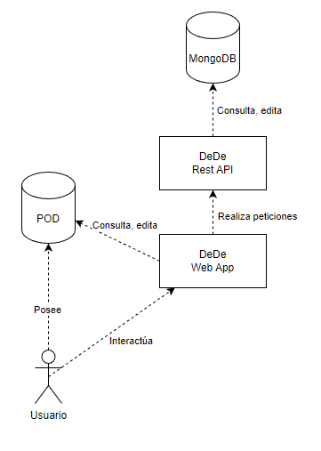
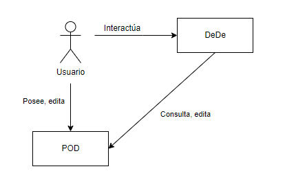
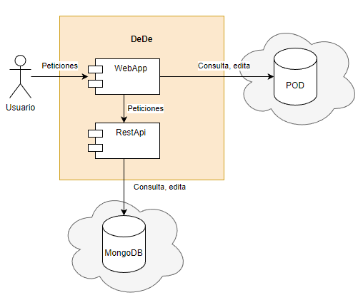
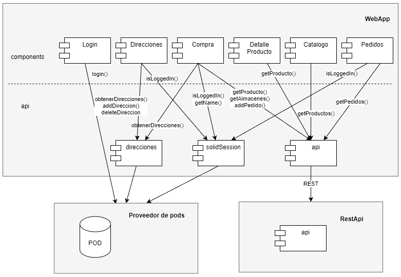
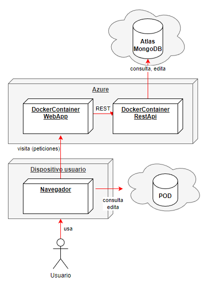
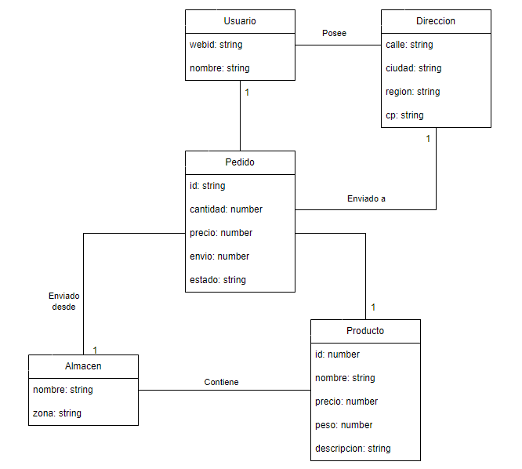
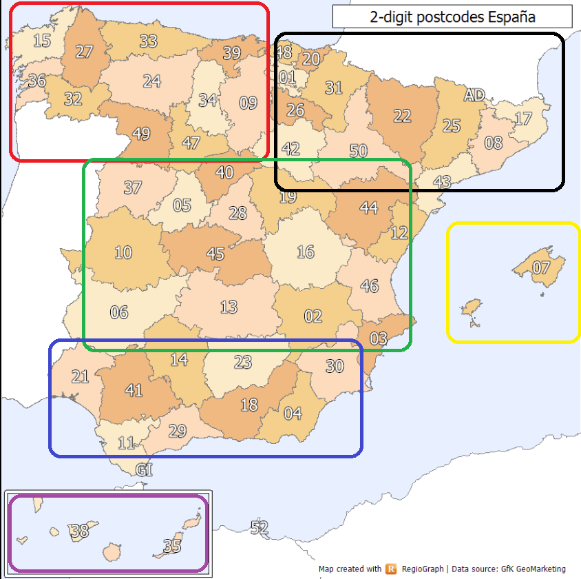
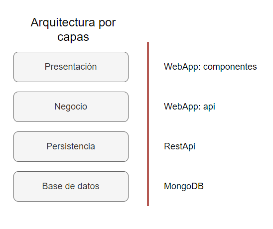
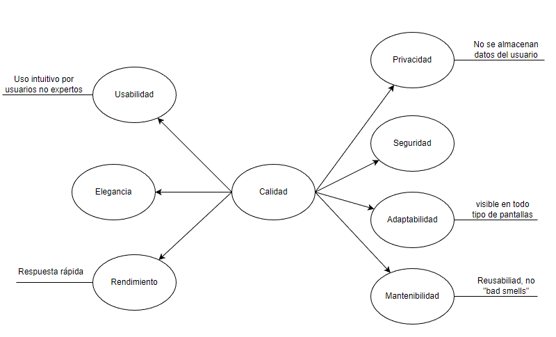
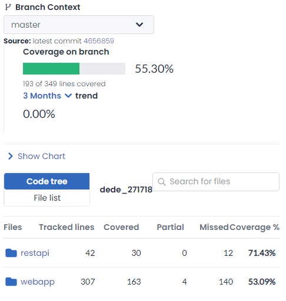

1. Introduction and Goals
DeDe es un sistema de compra online cuya principal característica es la descentralización de los datos de sus clientes siguiendo la especificación de Solid.
1.1. Requirements Overview
Los principales requisitos funcionales del sistema son:
-
Un usuario puede iniciar sesión a través de un proveedor de PODs. Es en estos pods donde DeDe consultará los datos del usuario, sin almacenarlos en el sistema, respetando así su privacidad.
-
Un catálogo con los productos a la venta, visible para todos los usuarios y con la posibilidad de realizar una búsqueda. Cada producto muestra su nombre, precio y la opción para ver más detalles, comprarlo o añadirlo a la cesta.
-
Un usuario que haya iniciado sesión puede proceder a la compra de un producto o añadirlo a su cesta, visualizar los productos de su cesta, seleccionar productos de su cesta para proceder a su compra y visualizar sus pedidos realizados.
-
Un usuario que haya iniciado sesión puede gestionar sus direcciones (almacenadas en su pod), pudiendo añadir y borrarlas desde la propia aplicación.
-
En el proceso de compra, el usuario seleccionará una dirección de envío de su pod, podrá opcionalmente especificar un rango horario para realizar la entrega (con un coste adicional), y verá el coste del pedido, con el precio del producto o productos y los gastos de envío, que se calculan en función de la distancia entre la dirección y almacén seleccionados.
-
En el caso de la compra de un producto, se puede seleccionar el almacén desde el que será enviado y la cantidad.
-
En el caso de la compra de un conjunto de productos de la cesta, se visualizará la lista de productos con su cantidad y almacén seleccionados, junto a una opción para editar estos de una manera similar a cuando se realiza la compra de un producto por separado.
-
1.2. Quality Goals
| N. | Atributo de calidad | Objetivo, motivaciones |
|---|---|---|
1 |
Privacidad |
El sistema no almacenará información personal de los clientes, respetando su privacidad siguiendo los principios Solid. |
2 |
Usabilidad |
Todo tipo de usuario debería ser capaz de utilizar la aplicación ágilmente de forma intuitiva, sin ningún conocimiento o experiencia previa en esta. |
3 |
Rendimiento |
El sistema debe responder de forma eficaz y rápida, creando la ilusión de que no se trata de una aplicación web sino una de escritorio. |
4 |
Adaptabilidad |
Es importante que la aplicación se visualice correctamente y de forma satisfactoria en dispositivos móviles. |
5 |
Elegancia |
Se debe cuidar la estética visual de la aplicación. |
6 |
Seguridad |
La aplicación debe ser robusta y almacenar los datos de manera segura. |
7 |
Mantenibilidad |
Esencial que el se construya desde un principio de una manera mantenible que permita realizar cambios y añadir nuevas funcionalidades en un futuro. |
1.3. Stakeholders
| Stakeholder | Expectativas, motivaciones |
|---|---|
Equipo de desarrollo |
El equipo encargado de construir la aplicación y aplicar la arquitectura diseñada. |
Profesores |
Son los encargados de evaluar el proyecto y el sistema final. También actúan como el supuesto cliente (empresa de venta de productos). |
Usuario |
Los usuarios finales, los que usarán la aplicación para realizar compras. |
2. Architecture Constraints
2.1. Restricciones organizativas
| Restricción | Explicación |
|---|---|
Equipo individual |
Este proyecto debe realizarse de manera individual. |
Fecha límite |
La defensa del proyecto se llevará a cabo el jueves 19 de enero de 2023. |
Dedicación temporal |
Se deben emplear entre 75 y 100 horas al proyecto por cada integrante del equipo de desarrollo. |
Documentación de la arquitectura |
La documentación sigue la estructura propuesta por la plantilla Arc42. |
GitHub |
El proyecto debe realizarse en un repositorio público de GitHub. |
Testing |
Se requieren pruebas unitarias, pruebas de aceptación, pruebas de carga y un mínimo del 50% de cobertura de código. Incluir apartado 13 en el documento con los resultados. |
2.2. Restricciones técnicas
| Restricción | Explicación |
|---|---|
React |
La aplicación será implementada utilizando el framework React. |
Typescript |
La aplicación será implementada utilizando el lenguaje Typescript. |
Solid |
El sistema seguirá la especificación de Solid. |
Despliegue e integración continua |
La aplicación debería ser accesible y estar desplegada en la nube utilizando un sistema de integración continua. |
Docker |
La aplicación debería ser desplegable localmente como docker-compose. |
3. System Scope and Context
3.1. Business Context
| Agente | Explicación |
|---|---|
Usuario |
Usuario de la aplicación. Cliente que puede ver el catálogo de productos de la tienda, iniciar sesión con un proveedor de pods, comprar y ver sus pedidos. |
POD |
Servidor de almacenamiento de datos personales del usuario. La aplicación obtiene de aquí las direcciones del usuario. |
WebApp |
El usuario interactúa con su interfaz. Realiza peticiones a la RestAPI y al pod del usuario para obtener los datos. |
RestAPI |
Se encarga de la capa de persistencia, realiza consultas en la base de datos. |
MongoDB |
Base de datos NoSQL orientado a documentos donde se almacenarán los datos de la aplicación. |
Diagrama del sistema

4. Solution Strategy
Resumen de estrategias y decisiones fundamentales:
-
Se ha decidido elaborar la documentación en español. El motivo principal es agilizar su elaboración y así poder emplear recursos en otros apartados del proyecto. Es un aspecto que puede ser (y será) cambiado fácilmente.
-
El proyecto parte de la plantilla dede_0.
-
La base de datos será MongoDB. Se trata de una base de datos NoSQL orientada a documentos popular para equipos de desarrollo en metodologías ágiles. Algunas de sus ventajas son su rendimiento y consultas bastante avanzadas para ser una base de datos NoSQL, permitir una escabilidad vertical y horizontal acorde a la demanda de la aplicación y que el equipo de desarrollo tiene algo de experiencia con esta tecnología.
-
En un principio se pensó en obtener las direcciones del usuario en el login y almacenarlas en memoria para acceder a ellas cuando fueran necesarias. Sin embargo, como las direcciones dependen de un sistema externo, debemos obtenerlas de este siempre que las necesitemos. Si no, no se verían reflejados en la sesión del usuario cambios realizados fuera de la aplicación.
-
No se consultarán APIs externas de portadores. Las que se han investigado requerían contactar con la plataforma como posibles clientes (y no los vamos a molestar para hacer esta demo).
-
Para crear interfaces nos apoyaremos en la librería Material UI, que nos permite crear componentes de interfaz estéticos con un esfuerzo mínimo.
-
Para conectar con MongoDB usaremos la librería mongoose, creando schemas para nuestros datos, la conexión y las consultas.
-
No habrá ni siquiera tabla de usuarios en nuestra base de datos, no se almacenarán ni direcciones ni nigún otro dato que no sea el webId asociado a un pedido. Al realizar una compra, los datos como el nombre y la dirección del usuario se mandarán directamente a los servicios de transporte y de pago sin pasar por nuestra base de datos.
-
Para la comunicación con el pod del usuario usamos las librerías @inrupt/solid-client y @inrupt/solid-client-authn-browser, que están bien documentadas y permiten el acceso autorizado a los pods. El usuario podrá iniciar sesión con los proveedores de pod solidcommunity e inrupt.
-
Integración continua, consistiendo en realización de pruebas unitarias de la restapi y webapp, análisis estático de sonarcloud, pruebas de aceptación y creación de contenedores Docker y publicación como paquetes en GitHub
-
Despliegue manual en azure. Se investigaron Github actions (como "Deploy a containes to an Azure Web App") para tener un sistema de CI/CD, pero se determinó que no era necesario y que no merecía la pena invertir los recursos necesarios para ello.
5. Building Block View
5.1. Whitebox Overall System
Diagrama general del sistema

5.2. Vista de componentes de DeDe
Diagrama con los módulos internos de DeDe

5.3. Vista de componentes de la WebApp
Diagrama con los componentes de la WebApp y su interacción con el resto de sistemas

6. Runtime View
6.1. Escenario 1
Usuario no identificado visita la tienda y accede a los detalles de un producto

6.2. Escenario 2
Usuario no identificado en el login inicia sesión, visita la página de compra de un producto y lo compra

7. Deployment View
Para el despliegue, las imágnes docker producidas en la integración continua son subidas a un entorno dockerizado de Azure.
7.1. Diagrama de despliegue

8. Cross-cutting Concepts
8.1. Domain model

Nótese que el usuario y las direcciones no se transforman en tablas de nuestra base de datos. El "precio" en un pedido es el resultado de multiplicar el precio del producto por la cantidad, es necesario almacenarlo junto con el pedido ya que el precio de este es inmutable mientras que el del producto puede cambiar con el tiempo.
8.2. Cálculo de gastos de envío
Para los gastos de envío se tiene en cuenta tanto el peso del producto como la distancia entre el almancén desde el que se manda y la dirección de envío del usuario.
Para el peso, se consideran tres rangos: menor de 5kg, entre 5kg y menor de 20kg, y 20kg o más.
Para la distancia, se ha dividido el territorio de España en zonas, con las cuales se consideran tres tipos de envío:
-
Tipo 1: envío a la misma zona
-
Tipo 2: envío desde zona peninsular hasta otra zona peninsular
-
Tipo 3: envío desde/a zona de canarias o baleares
Distancia\Peso |
<5kg |
>=5kg y < 20kg |
>= 20kg |
Tipo 1 |
0€ |
2€ |
5€ |
Tipo 2 |
5€ |
8€ |
15€ |
Tipo 3 |
20€ |
25€ |
30€ |

9. Design Decisions
| Decisión | Expectativas, motivaciones |
|---|---|
Partir de la plantilla dede_0 |
Es una aplicación Express.js con React, que propone una restapi para acceder a la base de datos. Incluye varias herramientas propuestas ya con las que trabajar. Las mayores ventajas son la agilización del proyecto y el poder aprender un poco de las distintas tecnologías que usa. Otras alternativas serían crear un proyecto desde 0 o desde otra plantilla como por ejemplo una plantilla de aplicación Solid con React, pero están lejos de ser tan convenientes como partir de dede_0. |
Arquitectura por capas |
Se ha propuesto una arquitectura en capas. Estaría dividida en las capas Presentación (componentes React en webapp), Negocio (funciones en WwebApp), Persistencia (RestApi) y Base de Datos (MongoDB). Esto facilita la evolución independiente de cada capala y reutilización, agilizando el desarrollo del proyecto. Las desventajas serían una posible respuesta más lenta por atravesar diferentes capas y el riesgo de . Una alternativa sería una arquitectura hexagonal con el modelo de datos como centro. |
Base de datos externa MongoDB |
Con una base de datos externalizada, podemos dockerizar y clusterizar la aplicación para actividades como balancear la carga y cambiar rápidamente una aplicación que falla; y todas dependerían y verían la misma base de datos. Una base de datos NoSQL orientada a documentos es también fácilmente clusterizable, pudiendo escalarla horizontalmente y obtener los beneficios previamente mencionados de la clusterización. Se ha elegido MongoDB en su plataforma en la nube Atlas, algunas de sus ventajas son su rendimiento y consultas bastante avanzadas para ser una base de datos NoSQL, permitir una escabilidad vertical y horizontal acorde a la demanda de la aplicación y que el equipo de desarrollo tiene algo de experiencia con esta tecnología. Como contra, dependemos de un servicio externo. |
Arquitectura por capas

10. Quality Requirements
10.1. Quality Tree

10.2. Quality Scenarios
| Atributo de calidad | Objetivo, motivaciones | Prioridad |
|---|---|---|
Privacidad |
El sistema no almacenará ningún tipo de información personal de los clientes que no sea su webid en los pedidos que realice. |
Alta |
Usabilidad |
Todo tipo de usuario debería ser capaz de utilizar la aplicación ágilmente de forma intuitiva. Iniciar sesión en menos de 1 minuto, ver sus direcciones y añadirlas o borrarlas en menos de 2 minutos, realizar una compra en menos de 3 minutos. |
Alta |
Rendimiento |
El sistema debe responder en menos de 2 segundos a las peticiones del usuario. |
Alta |
Adaptabilidad |
La aplicación se visualizará correctamente en las pantallas de dispositivos móviles disponibles en las herramientas de desarrollador de Chrome. |
Media |
Seguridad |
Los datos se deben almacenar de forma segura. |
Alta |
Mantenibilidad |
Evitar malos olores y repetición de lineas de código con herramientas de análisis estático. |
Media |
11. Risks and Technical Debts
11.1. Risks
-
Muchas de las tecnologías empleadas en el proyecto son nuevas para el equipo de desarrollo.
-
Ninguno de los integrantes del equipo de desarrollo es experto en desarrollar interfaces visualmente bonitas.
-
Existe una fecha límite para el proyecto. === Technical Debts
-
Requisito funcional: carrito no implementado
-
Mejorar usabilidad implementando paginación para el catálogo de productos y la vista de pedidos.
-
Mejorar usabilidad con mensajes al usuario (campos incorrectos al intentar comprar, confirmación de que una acción se realiza, etc.).
-
La restapi no cuenta con elementos de seguridad actualmente (autentificación y autorización).
-
Comprobar que se cumplen las reglas de negocio en webapp/src/api y en la restapi.
-
Testing más exhaustivo.
12. Glossary
13. Testing
El testing en este proyecto ha ido enfocado más a aprender las tecnologías implicadas (librerías, integración continua, etc.) que a probar la aplicación. Esto se debe también a que hay otras asignaturas que se dedican al testeo, como Calidad, Validación y Verificación del Software.
13.1. Pruebas unitarias
Para la creación de test unitarios se han usado las librerías Jest y, en el caso de la webapp, React Testing Library. En la webapp, se prueba el correcto funcionamiento y renderizado de cada componente individual, las funciones que llaman a datos de los pod o la bd han sido mockerizadas con funciones que devuelven datos preparados. En la restapi se comprueba que cada función se ejecute correctamente y devuelva la respuesta esperada.
13.2. Cobertura de código

Se ha alcanzado el mínimo propuesto del 50% de cobertura de código, 53% en la webapp y 71% en la restapi concretamente, aunque lo ideal sería estar por encima de un 80%.
13.3. Pruebas de aceptación
Para la creación de test de aceptación se han usado las librerías Jest y Cucumber. Cucumber permite realizar los tests con la sintaxis de historias de usuario Given, When, Then. Un ejemplo de prueba de aceptación sería:
13.4. Pruebas de carga
Realizado con la herramienta Gatling, la cual permite grabar acciones realizadas en la aplicación con un proxy, para después reproducirlas en mayor cantidad, poniendo a prueba la carga de trabajo que soporta nuestra aplicación.
Se ha probado con 25 usuarios por segundo durante un minuto. El tiempo medio de las respuestas han estado por debajo de los 1,5 segundos.
About arc42
arc42, the Template for documentation of software and system architecture.
By Dr. Gernot Starke, Dr. Peter Hruschka and contributors.
Template Revision: 7.0 EN (based on asciidoc), January 2017
© We acknowledge that this document uses material from the arc 42 architecture template, http://www.arc42.de. Created by Dr. Peter Hruschka & Dr. Gernot Starke.